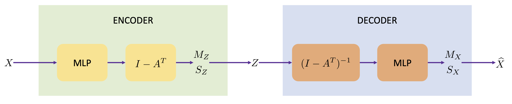
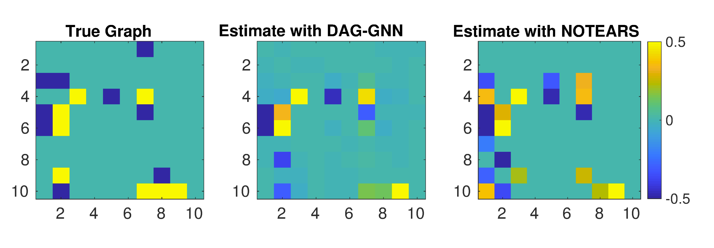
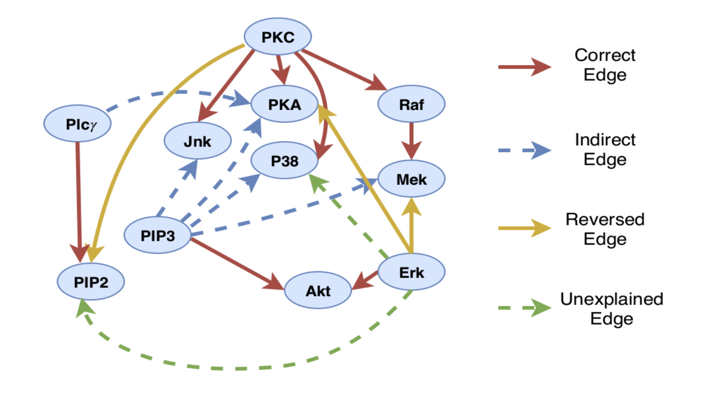

1. Introduction: The Challenge of Structure Learning
인과추론(Causal Inference)과 머신러닝의 교차점에서, 데이터의 생성 과정을 설명하는 방향성 비순환 그래프(Directed Acyclic Graph, DAG)를 학습하는 것은 매우 중요한 문제입니다. 이를 Structure Learning이라고 부릅니다.
Bayesian Network(BN)의 구조인 DAG는 변수 간의 조건부 독립성을 표현하며, Pearl(1988) 이후 의학, 유전학, 경제학 등 다양한 분야에서 인과관계를 파악하는 도구로 사용되어 왔습니다.
하지만 데이터의 결합 분포(Joint Distribution)로부터 “Faithful”한 DAG를 찾아내는 것은 악명 높은 난제입니다.
Faithfulness란?
그래프 \(G\)와 결합 분포 \(\mathcal{P}\)가 서로 “Faithful”하다는 것은, \(\mathcal{P}\)에서 성립하는 모든 조건부 독립성이 그래프 \(G\)에서도 (d-separation을 통해) 나타나고, 그 역도 성립함을 의미합니다.
The Combinatorial Problem (기존의 한계)
DAG 구조 학습이 어려운 근본적인 이유는 탐색 공간(Search Space)의 방대함 때문입니다.
노드(변수)의 개수가 늘어날 때, 가능한 그래프의 수는 초지수적(Superexponential)으로 증가합니다.
이는 NP-hard 문제로 알려져 있습니다.
전통적인 접근 방식은 크게 두 가지로 나뉩니다:
- Score-based Methods:
- 가능한 그래프 구조에 대해 점수(BIC, BDeu 등)를 매기고, 이 점수를 최적화하는 그래프를 찾습니다.
- 하지만 그래프는 반드시 Acyclic(비순환)이어야 한다는 조합적 제약 조건(Combinatorial Constraint) 때문에, 전역 최적해를 찾는 것이 매우 어렵습니다.
- 따라서 탐욕적 탐색(Greedy Search)이나 트리 구조(Tree-structure) 가정 같은 근사법을 사용해야 했습니다.
- Constraint-based Methods:
- 변수 간의 조건부 독립성 검정(Independence Test)을 수행하여 엣지를 연결하거나 제거합니다 (예: PC Algorithm).
- 데이터 효율성이나 다중 가설 검정의 오류 문제 등이 존재합니다.
The Paradigm Shift: From Discrete to Continuous
- 최근 Zheng et al. (2018)의 연구(흔히 NOTEARS로 알려짐)는 이 분야에 혁신적인 돌파구를 마련했습니다.
- 그들은 조합적 문제였던 “Acyclicity Constraint”를 미분 가능한 연속 함수 형태로 재정의했습니다.
\[ h(A) = \text{Tr}(e^{A \circ A}) - d = 0 \]
- 여기서 \(A\)는 인접 행렬(Adjacency Matrix), \(d\)는 노드의 개수입니다.
- 이 제약 조건 덕분에 구조 학습 문제는 이제 연속 최적화(Continuous Optimization) 문제로 변환되어, 경사 하강법(Gradient Descent)과 같은 표준적인 최적화 기법을 사용할 수 있게 되었습니다.
Limitation of Existing Continuous Methods
- 하지만 Zheng et al. (2018)의 접근법에도 한계가 있었습니다:
- 선형성 가정 (Linearity Assumption): 기본적으로 선형 구조 방정식 모델(Linear SEM)을 가정합니다.
- 분포의 제약: 최소제곱(Least-squares) 손실 함수를 사용하므로, 실제 데이터의 복잡한 분포를 반영하기 어렵습니다.
- 현실 세계의 데이터는 비선형적 관계를 가지며, 단순한 선형 모델로는 포착할 수 없는 복잡한 메커니즘으로 생성됩니다.
DAG-GNN: A Deep Generative Approach
- 본 논문(Yu et al., 2019)은 딥러닝의 강력한 표현력을 활용하여 기존의 선형 가정을 극복하고자 합니다. 저자들은 DAG-GNN이라는 새로운 아키텍처를 제안합니다.
Key Idea: VAE + Graph Neural Networks
이 모델의 핵심은 Variational Autoencoder (VAE) 프레임워크에 Graph Neural Network (GNN)을 결합한 것입니다.
Deep Generative Model: 신경망은 “Universal Approximator”입니다. 이를 통해 변수 간의 복잡한 비선형 관계를 모델링합니다.
Encoder/Decoder Parameterization: VAE의 인코더와 디코더를 일반적인 MLP가 아닌, 특별히 설계된 GNN으로 파라미터화합니다.
Evidence Lower Bound (ELBO): 모델의 목적 함수(Score)는 VAE의 ELBO가 됩니다. 이는 데이터의 우도(Likelihood)를 최대화하는 방향으로 학습됨을 의미합니다.
A New Acyclicity Constraint
또한, 저자들은 NOTEARS에서 제안된 행렬 지수(Matrix Exponential) 제약 조건 대신, 딥러닝 프레임워크에서 구현하기 더 용이하고 수치적으로 안정적인 다항식(Polynomial) 형태의 새로운 제약 조건을 제안합니다.
NOTEARS (Zheng et al., 2018): \(Tr(e^{A \circ A}) - d = 0\)
DAG-GNN 제안: 수치적 안정성을 높인 변형된 형태를 사용합니다.
Main Contributions
이 논문의 Introduction에서 강조하는 주요 기여점은 다음과 같이 네 가지로 요약할 수 있습니다.
- Deep Generative Model 기반 접근:
- 기존의 Linear SEM을 넘어, VAE를 사용하여 데이터의 복잡한 비선형 분포를 포착하고 샘플링할 수 있는 모델을 제안했습니다.
- 그래프 구조(Weighted Adjacency Matrix)는 잠재 변수가 아니라, 신경망 파라미터와 함께 학습되는 명시적인 파라미터로 설정됩니다.
- 다양한 데이터 타입 지원:
- VAE 프레임워크의 특성상, 디코더의 출력 분포(Likelihood)를 적절히 설정함으로써 연속형 변수뿐만 아니라 이산형(Discrete) 변수도 자연스럽게 처리할 수 있습니다.
- 벡터 값 노드(Vector-valued Nodes) 지원:
- GNN을 사용하므로 각 노드가 단순 스칼라 값이 아닌 벡터 값을 가질 수 있습니다. 이는 각 노드가 여러 특징(Feature)을 가지는 복잡한 시나리오에 적용 가능함을 의미합니다.
- 개선된 Acyclicity Constraint:
- 기존의 행렬 지수 제약 조건이 자동 미분(Automatic Differentiation) 라이브러리에서 구현하기 까다로울 수 있다는 점을 지적하며, 더 실용적이고 수치적으로 안정적인 다항식 기반의 대안을 제시했습니다.
3. Neural DAG Structure Learning
- 본 논문은 선형 구조 방정식 모델(Linear SEM)을 일반화(Generalize)하여 딥러닝 기반의 생성 모델(Deep Generative Model)을 구축하는 것을 목표로 합니다.
- 첫 단계로, 가장 기본이 되는 Linear SEM의 수식적 구조와 그 의미를 먼저 명확히 짚고 넘어가겠습니다.
3.1. Linear Structural Equation Model (Linear SEM)
- 우리가 찾고자 하는 DAG(Directed Acyclic Graph)의 구조는 가중치가 있는 인접 행렬(Weighted Adjacency Matrix) \(A\)로 표현됩니다.
Notation 및 정의
먼저 모델링에 필요한 변수들을 정의합니다.
\(m\): 노드(변수)의 개수입니다.
\(A \in \mathbb{R}^{m \times m}\):
- DAG의 가중치 인접 행렬입니다.
- \(A_{ij}\)가 0이 아니라면 \(i\)에서 \(j\)로 가는 엣지가 존재함을 의미합니다.
\(X \in \mathbb{R}^{m \times d}\):
- \(m\)개의 변수에 대한 데이터 행렬입니다.
- 일반적인 문헌에서 변수는 스칼라(\(d=1\))로 취급되지만, 본 논문에서는 이를 \(d\)-차원 벡터로 일반화(Generalize)하여 Vector-valued Node를 다룹니다.
- 각 행(Row)은 하나의 변수(노드)에 대응하고, 각 열(Column)은 해당 변수의 특징(Feature) 혹은 샘플 차원을 의미합니다.
\(Z \in \mathbb{R}^{m \times d}\):
- 노이즈 행렬(Noise Matrix)입니다.
- 외생 변수(Exogenous variable)에 해당합니다.
선형 관계식 (The Model)
- Linear SEM은 변수 \(X\)가 부모 변수들의 선형 결합(Linear Combination)과 노이즈 \(Z\)의 합으로 생성된다고 가정합니다. 이를 행렬식으로 표현하면 다음과 같습니다.
\[ X = A^T X + Z \tag{1}\]
- 이 식은 “현재 노드의 값(\(X\))은 부모 노드들의 값(\(A^T X\))에 가중치를 곱해 더한 뒤, 고유한 노이즈(\(Z\))를 더한 것과 같다”는 인과적 메커니즘을 나타냅니다.
From Structure to Generation (Derivation)
- 이제 이 구조 방정식(Structural Equation)을 데이터를 생성하는 생성 모델(Generative Model)의 관점으로 전환해보겠습니다.
- 이를 위해서는 \(Z\)에서 \(X\)를 만들어내는 과정으로 수식을 변형해야 합니다.
Topological Sort
DAG의 가장 중요한 성질 중 하나는, 그래프 내에 사이클(Cycle)이 없기 때문에 모든 노드를 위상 정렬(Topological Order) 순서로 나열할 수 있다는 점입니다.
만약 노드들을 위상 정렬 순서대로 재배열한다면, 인접 행렬 \(A\)는 엄격한 상삼각 행렬(Strictly Upper Triangular Matrix)이 됩니다.
- 즉, 대각 성분과 그 아래 성분들이 모두 0이 됩니다 (\(A_{ij} = 0 \text{ for } i \ge j\)).
- 이는 어떤 노드도 자기 자신이나 자신의 후손(descendant)으로부터 영향을 받지 않음을 수학적으로 보장합니다.
Transformation
- 식 (1)을 \(X\)에 대해 정리하는 과정을 단계별로 유도해보겠습니다.
\[ \begin{aligned} X - A^T X &= Z \\ (I - A^T)X &= Z \\ X &= (I - A^T)^{-1} Z \end{aligned} \]
Equivalence with Ancestral Sampling
\[ X = (I - A^T)^{-1} Z \tag{2}\]
- 이 식은 “DAG를 따르는 Ancestral Sampling” 과정을 수학적으로 압축해 놓은 형태입니다. 그 이유를 단계별로 살펴보겠습니다.
Ancestral Sampling이란?
- Ancestral Sampling(조상 샘플링)은 베이지안 네트워크에서 데이터를 생성하는 가장 표준적인 방법입니다.
- 인과관계의 흐름(부모 \(\to\) 자식)에 따라 순차적으로 값을 결정하는 방식입니다.
- Top-down: 부모가 없는 루트 노드(조상)의 값을 먼저 노이즈(\(Z\))로부터 결정합니다.
- Propagation: 그 결정된 값이 자식 노드로 전파되어, 자식 노드의 값 결정에 영향을 줍니다.
- 이 과정을 위상 정렬(Topological Sort) 순서대로 끝까지 반복합니다.
Neumann Series를 통한 연결
- 식 (2) 의 역행렬 부분 \((I - A^T)^{-1}\)을 노이만 급수(Neumann Series)를 이용해 전개합니다.
\[ (I - A^T)^{-1} = I + A^T + (A^T)^2 + (A^T)^3 + \dots \]
- 이 전개식을 식 2에 대입하면 다음과 같습니다.
\[ X = \underbrace{I \cdot Z}_{\text{Self}} + \underbrace{A^T \cdot Z}_{\text{Parents}} + \underbrace{(A^T)^2 \cdot Z}_{\text{Grandparents}} + \dots \]
행렬 거듭제곱(\(A^k\))의 의미
- 여기서 행렬의 거듭제곱 항들은 그래프 이론에서 경로(Path)의 개념과 일치합니다.
- \(I\) (0-hop): 자기 자신의 고유한 노이즈(\(Z\))입니다.
- \(A^T\) (1-hop): 부모 노드들로부터 직접 받는 영향입니다.
- \((A^T)^2\) (2-hop): 부모를 거쳐서 오는 조부모(Grandparents)의 영향입니다.
- \((A^T)^k\) (\(k\)-hop): \(k\)단계를 거쳐서 오는 \(k\)대 조상들의 영향입니다.
- 즉, \(X = (I - A^T)^{-1} Z\)라는 수식은 “나의 값(\(X\))은 내 고유한 성향(\(Z\))뿐만 아니라, 부모, 조부모 등 모든 조상들의 영향력이 누적되어 형성된 것이다”라는 Ancestral Sampling의 철학을 행렬 연산 한 번으로 표현한 것입니다.
행렬 \(A\)의 거듭제곱 \(A^k\)의 \((i, j)\) 성분이 노드 \(i\)에서 \(j\)로 가는 길이 \(k\)인 모든 경로의 가중치 합임을 수학적 귀납법으로 간단히 증명할 수 있습니다.
명제 \(P(k)\): \((A^k)_{ij}\)는 \(i \to j\)로 가는 길이 \(k\)인 경로들의 가중치 합이다.
1. 기초 단계 (Base Case, \(k=1\)): 정의에 의해 \((A^1)_{ij} = A_{ij}\)입니다. 이는 \(i\)에서 \(j\)로 직접 연결된 엣지(길이 1)의 가중치이므로 명제 \(P(1)\)은 참입니다.
2. 귀납 가정 (Inductive Step): 임의의 자연수 \(k\)에 대해 \(P(k)\)가 참이라고 가정합니다. 즉, \((A^k)_{it}\)는 \(i \to t\)로 가는 길이 \(k\)인 경로의 합입니다.
이제 \(k+1\)일 때를 살펴봅니다. 행렬 곱셈의 정의에 따라: \[ (A^{k+1})_{ij} = (A^k \cdot A)_{ij} = \sum_{t} (A^k)_{it} \cdot A_{tj} \]
이 수식의 의미를 해석해 보면: * \((A^k)_{it}\): \(i\)에서 중간 노드 \(t\)까지 가는 길이 \(k\)인 경로 (귀납 가정) * \(A_{tj}\): \(t\)에서 도착 노드 \(j\)로 가는 길이 \(1\)인 엣지 * \(\sum_{t}\): 가능한 모든 중간 경유지 \(t\)에 대해 합산
즉, “\(i\)에서 \(t\)까지 \(k\)걸음으로 간 뒤, \(t\)에서 \(j\)로 1걸음 더 가는 모든 경우의 수”를 더한 것이므로, 이는 \(i\)에서 \(j\)로 가는 길이 \(k+1\)인 모든 경로의 합과 같습니다.
3. 결론: 수학적 귀납법에 의해 모든 자연수 \(k\)에 대해 명제 \(P(k)\)는 참입니다. 따라서 \((A^T)^k\)는 \(k\)단계를 거친 조상들의 영향력을 의미하게 됩니다.
결론: VAE 도입의 동기
- 이러한 관점은 DAG 구조 학습 문제를 새로운 시각으로 바라보게 합니다.
- 복잡한 인과관계 추론 문제를 “노이즈 \(Z\)를 데이터 \(X\)로 매핑하는 인코더/디코더를 학습하는 문제”로 치환할 수 있습니다.
- 이것이 바로 저자들이 생성 모델의 대표 주자인 VAE(Variational Autoencoder)를 도입하여, 인코더와 디코더를 통해 \(A\)를 학습하고자 한 핵심적인 동기(Motivation)입니다.
3.2. Proposed Graph Neural Network Model
- 앞선 섹션에서 우리는 Linear SEM이 다음과 같이 노이즈 \(Z\)를 데이터 \(X\)로 변환하는 선형 과정으로 표현됨을 확인했습니다.
- 본 섹션에서는 이 수식을 Graph Neural Network(GNN)의 관점에서 재해석하고, 이를 바탕으로 비선형 관계까지 포착할 수 있는 DAG-GNN만의 독창적인 아키텍처를 검토합니다.
Linear SEM as a Graph Neural Network
- 저자들은 위 식 (2)를 딥러닝 커뮤니티의 관점에서 다음과 같은 일반적인 함수 꼴로 바라봅니다.
\[ X = f_A(Z) \]
- 여기서 \(f_A\)는 그래프 구조(인접 행렬 \(A\))에 의해 파라미터화된 함수입니다.
- 즉, “노드 특징(Feature)인 \(Z\)를 입력받아, 그래프 구조를 통과시켜 고차원 표현인 \(X\)를 반환하는 과정”으로 해석할 수 있습니다.
Existing GNN Architectures
- 대부분의 최신 GNN 모델들(GCN, GraphSAGE, GAT 등)도 이와 유사한 형태를 띱니다.
- 예를 들어, 널리 쓰이는 GCN (Graph Convolutional Network)의 수식은 다음과 같습니다. \[
X = \hat{A} \cdot \text{ReLU}(\hat{A} Z W^1) \cdot W^2
\]
- \(\hat{A}\): 정규화된 인접 행렬 (Normalized Adjacency Matrix)
- \(W^1, W^2\): 학습 가능한 가중치 행렬
- 하지만 일반적인 GNN은 주어진 고정된 그래프 위에서 노드 임베딩을 학습하는 것이 목표인 반면, 우리의 목표는 그래프 구조 \(A\) 자체를 학습하는 것입니다.
The DAG-GNN Architecture
- 저자들은 Linear SEM의 구조적 특성(\((I-A^T)^{-1}\))을 그대로 계승하면서, 신경망의 표현력을 더하기 위해 새로운 GNN 아키텍처를 제안합니다.
The Proposed Equation
제안하는 모델의 핵심 수식은 다음과 같습니다.
\[ X = f_2 \left( (I - A^T)^{-1} f_1(Z) \right) \tag{3}\]
이 수식은 세 단계의 변환 과정으로 구성됩니다:
- Transforming Noise (\(f_1(Z)\)):
- 입력 노이즈 \(Z\)를 비선형 함수 \(f_1\) (MLP 등)을 통해 변환합니다.
- 이는 단순한 가우시안 노이즈가 아닌 복잡한 잠재 분포를 표현하기 위함입니다.
- Structural Aggregation (\((I-A^T)^{-1}\)):
- 변환된 신호들이 DAG 구조 \(A\)에 따라 전파(Propagation)됩니다.
- 이 부분은 Linear SEM의 인과적 흐름을 그대로 따르며, 부모 노드의 영향력이 자식 노드로 전달되는 과정을 수학적으로 구현합니다.
- Transforming into Data Space (\(f_2(\cdot)\)):
- 구조적 정보가 반영된 신호를 다시 비선형 함수 \(f_2\)를 통해 관측 데이터 공간(\(X\))으로 매핑합니다.
Generalizing the Linear SEM (Interpretation)
이 모델이 중요한 이유는, 이것이 기존의 Linear SEM을 비선형(Non-linear)으로 일반화(Generalize)한 형태이기 때문입니다.
만약 \(f_2\)가 역함수(Invertible)를 가진다고 가정해봅시다. 그렇다면 식 (3)의 양변에 \(f_2^{-1}\)를 취하고 정리하여 다음과 같은 관계를 유도할 수 있습니다.
Derivation
\[ \begin{aligned} X &= f_2((I - A^T)^{-1} f_1(Z)) \\ f_2^{-1}(X) &= (I - A^T)^{-1} f_1(Z) \\ (I - A^T) f_2^{-1}(X) &= f_1(Z) \\ f_2^{-1}(X) - A^T f_2^{-1}(X) &= f_1(Z) \\ f_2^{-1}(X) &= A^T f_2^{-1}(X) + f_1(Z) \end{aligned} \]
Generalized SEM
- 결과적으로 다음과 같은 Generalized SEM 식을 얻게 됩니다.
\[ \underbrace{f_2^{-1}(X)}_{\text{Transformed Data}} = A^T \underbrace{f_2^{-1}(X)}_{\text{Parents}} + \underbrace{f_1(Z)}_{\text{Transformed Noise}} \]
- Linear SEM (\(X = A^T X + Z\))과의 비교:
- Linear SEM은 데이터 \(X\) 자체가 선형 결합을 이룹니다.
- DAG-GNN은 데이터 \(X\)를 적절히 비선형 변환한 \(f_2^{-1}(X)\) 공간에서 선형 관계(\(A^T\))가 성립한다고 가정합니다.
- 또한 노이즈 역시 단순 합이 아니라 \(f_1(Z)\) 형태로 비선형적으로 결합됩니다.
- 이러한 설계를 통해 DAG-GNN은 변수 간의 관계가 복잡한 비선형일 때도, 이를 잠재 공간(Latent Space)에서의 구조적 관계로 포착할 수 있게 됩니다.
Note on Implementation
- 저자들은 \(f_1\)과 \(f_2\)를 구체적으로 어떤 신경망으로 구현할지에 대해서는 후속 섹션으로 미루고 있습니다.
- 다만 중요한 제약 사항 하나를 언급합니다:
“\(f_2\)의 마지막 활성화 함수(Activation function)는 반드시 변수 \(X\)의 타입(Domain)과 일치해야 한다.”
- 예를 들어, \(X\)가 실수형(Continuous)이라면 Identity 함수를, 이진형(Binary)이라면 Sigmoid 등을 사용해야 한다는 뜻입니다. 이는 추후 논의될 Discrete Variable 처리를 위한 포석입니다.
3.3. Model Learning with Variational Autoencoder
- 이제 우리의 목표는 주어진 데이터 \(X^1, \dots, X^n\)을 가장 잘 설명하는 모델 파라미터(신경망 가중치 및 그래프 구조 \(A\))를 찾는 것입니다.
- 본 섹션에서는 이를 위해 Variational Autoencoder (VAE) 프레임워크를 도입하는 과정과 그 수학적 배경을 상세히 다룹니다.
The Challenge of Intractability
일반적으로 확률 모델의 학습은 관측 데이터의 로그 우도(Log-Likelihood), 또는 로그 증거(Log-Evidence)를 최대화하는 방향으로 진행됩니다.
데이터 샘플 \(X^1, \dots, X^n\)이 주어졌을 때, 평균 로그 증거는 다음과 같습니다.
\[ \frac{1}{n} \sum_{k=1}^n \log p(X^k) = \frac{1}{n} \sum_{k=1}^n \log \int p(X^k | Z) p(Z) \, dZ \]
- 여기서 문제가 발생합니다.
- 우변의 적분 \(\int p(X^k | Z) p(Z) \, dZ\)는 잠재 변수 \(Z\)의 모든 가능한 값에 대해 주변화(Marginalization)를 수행해야 합니다.
- 하지만 \(Z\)가 고차원이거나 \(p(X|Z)\)가 복잡한 신경망(Neural Network)으로 구성된 경우, 이 적분은 해석적으로 구하는 것이 불가능하며(Intractable), 수치적으로 근사하기에도 계산 비용이 매우 큽니다.
- 따라서 저자들은 이 문제를 해결하기 위해 변분 베이즈(Variational Bayes) 방법론을 도입합니다.
The Evidence Lower Bound (ELBO)
- 계산 불가능한 사후 분포 \(p(Z|X)\)를 근사하기 위해, 우리는 다루기 쉬운 분포인 변분 사후 분포(Variational Posterior) \(q(Z|X)\)를 도입합니다.
Derivation of ELBO
로그 증거 \(\log p(X)\)에서 출발하여 ELBO(Evidence Lower Bound)를 유도하는 과정은 다음과 같습니다. (편의상 \(X^k\)를 \(X\)로 표기합니다.)
- 로그 내부의 분모/분자에 \(q(Z|X)\) 곱하기: \[ \begin{aligned} \log p(X) &= \log \int p(X|Z) p(Z) \, dZ \\ &= \log \int p(X, Z) \, dZ \\ &= \log \int p(X, Z) \frac{q(Z|X)}{q(Z|X)} \, dZ \end{aligned} \]
- 기댓값 형태로 변환: \[ \begin{aligned} &= \log \int \frac{p(X, Z)}{q(Z|X)} q(Z|X) \, dZ \\ &= \log \mathbb{E}_{q(Z|X)} \left[ \frac{p(X, Z)}{q(Z|X)} \right] \end{aligned} \]
- 젠센 부등식(Jensen’s Inequality) 적용:
- 로그 함수는 오목(Concave) 함수이므로 \(\log(\mathbb{E}[Y]) \ge \mathbb{E}[\log(Y)]\)가 성립합니다. \[ \ge \mathbb{E}_{q(Z|X)} \left[ \log \frac{p(X, Z)}{q(Z|X)} \right] \]
- 항 분리 및 정리 (ELBO의 도출):
- 로그의 성질을 이용해 항을 분리하고, \(Z\)와 관련된 항들을 묶어 정리합니다.
\[ \begin{aligned} \mathcal{L} &= \mathbb{E}_{q(Z|X)} \left[ \log \frac{p(X|Z)p(Z)}{q(Z|X)} \right] \\ &= \mathbb{E}_{q(Z|X)} \Big[ \log p(X|Z) + \underbrace{\log p(Z) - \log q(Z|X)}_{\text{Latent Variable Terms}} \Big] \end{aligned} \]
- 여기서 KL Divergence(Kullback-Leibler Divergence)의 정의를 도입하여 식을 간결하게 정리할 수 있습니다.
- 두 확률분포 \(q\)와 \(p\)의 차이를 측정하는 KL Divergence는 다음과 같이 정의됩니다. \[D_{\text{KL}}(q || p) = \mathbb{E}_{x \sim q} [ \log q(x) - \log p(x) ]\]
- 위 식의 뒷부분(\(\log p(Z) - \log q(Z|X)\))은 KL Divergence 정의와 부호가 반대입니다. 따라서 마이너스(\(-\))를 밖으로 빼내어 형태를 맞춥니다.
\[ \begin{aligned} &= \mathbb{E}_{q(Z|X)} [\log p(X|Z)] - \mathbb{E}_{q(Z|X)} [\underbrace{\log q(Z|X) - \log p(Z)}_{D_{\text{KL}}(q||p) \text{ Form}} ] \\ &= \mathbb{E}_{q(Z|X)} [\log p(X|Z)] - D_{\text{KL}}(q(Z|X) || p(Z)) \end{aligned} \]
- 최종적으로 식 (4)에 해당하는 ELBO(Evidence Lower Bound)를 얻게 됩니다.
\[ \mathcal{L}_{\text{ELBO}} \equiv -D_{\text{KL}} \Big( q(Z|X^k) \,||\, p(Z) \Big) + \mathbb{E}_{q(Z|X^k)} \Big[ \log p(X^k|Z) \Big] \tag{4}\]
Interpretation of ELBO
식 (4)는 두 가지 직관적인 항으로 구성됩니다.
- Reconstruction Loss: \(\mathbb{E}_{q(Z|X^k)} [\log p(X^k|Z)]\)
- 잠재 변수 \(Z\)로부터 데이터 \(X\)를 복원할 확률(Likelihood)을 최대화합니다.
- Autoencoder의 복원 오차 최소화와 대응됩니다.
- Regularization Term: \(-D_{\text{KL}}(q(Z|X^k) || p(Z))\)
- 우리가 근사한 사후 분포 \(q(Z|X)\)가 사전 분포 \(p(Z)\)(일반적으로 표준 정규분포)와 얼마나 다른지를 측정합니다.
- 이 차이를 최소화(음수이므로 최대화)하여, 잠재 공간이 과도하게 찌그러지는 것을 방지합니다.
결론적으로, 실제 로그 증거와 ELBO의 차이는 KL Divergence \(D_{\text{KL}}(q(Z|X) || p(Z|X)) \ge 0\) 만큼 발생하므로, ELBO를 최대화하는 것은 로그 증거의 하한(Lower Bound)을 최대화하는 것과 같습니다.
Architecture: Encoder and Decoder
- VAE 프레임워크를 DAG-GNN에 적용하기 위해, Encoder와 Decoder를 구체적인 신경망 구조로 정의해야 합니다.
Decoder (Generative Model)
- Decoder는 잠재 변수 \(Z\)에서 데이터 \(X\)를 생성하는 역할을 합니다.
- 이는 3.2절에서 정의한 Generalized SEM (식 3)과 정확히 일치합니다.
\[ \text{Decoder: } \quad X = f_2 \left( (I - A^T)^{-1} f_1(Z) \right) \]
- 여기서 \((I-A^T)^{-1}\) 항은 \(Z\)의 정보가 그래프 구조를 따라 퍼져나가며(Propagation) \(X\)를 형성하는 과정을 담당합니다.
Encoder (Inference Model)
- Encoder는 관측된 데이터 \(X\)로부터 잠재 변수 \(Z\)를 추론하는 역할을 합니다.
- 저자들은 Decoder의 역연산 개념을 적용하여 다음과 같은 Encoder 구조를 제안합니다.
\[ \text{Encoder: } \quad Z = f_4 \left( (I - A^T) f_3(X) \right) \tag{5}\]
- 이 수식의 의미는 다음과 같습니다:
- \(f_3(X)\):
- 데이터 \(X\)를 비선형 변환합니다. 개념적으로 Decoder의 \(f_2\)의 역함수 역할을 수행합니다.
- \((I - A^T)\):
- Decoder에서는 역행렬 \((I-A^T)^{-1}\)을 사용해 정보를 확산시켰다면, Encoder에서는 그 역연산인 \((I-A^T)\)를 곱합니다.
- 이는 섞여 있는 정보들로부터 부모 노드의 영향을 제거하여 독립적인 노이즈(Latent factor)를 발라내는 과정으로 해석할 수 있습니다.
- \(f_4(\cdot)\):
- 최종적으로 비선형 변환을 통해 \(Z\) 공간으로 매핑합니다. 개념적으로 Decoder의 \(f_1\)의 역함수 역할을 합니다.
Parameterization
- 함수: \(f_1, f_2\) (Decoder)와 \(f_3, f_4\) (Encoder)는 모두 MLP(Multi-Layer Perceptron)로 파라미터화됩니다.
- 분포:
- \(q(Z|X)\)와 \(p(X|Z)\)는 각각 가우시안 분포 등을 가정하며, 신경망은 이 분포의 평균(\(\mu\))과 분산(\(\sigma^2\))을 출력하도록 설계됩니다.
- 구체적인 분포의 형태와 활성화 함수는 데이터 \(X\)의 타입(연속형 vs 이산형)에 따라 결정됩니다.
3.4. Architecture and Loss Function
- 이전 섹션에서 우리는 DAG 구조 학습을 위한 VAE 프레임워크를 정의했습니다.
- 이제 추상적인 수식(\(f_1, f_2, f_3, f_4\))을 넘어, 실제로 모델을 어떻게 구현하고 학습시킬지 구체적인 Architecture와 Loss Function을 정의할 차례입니다.
- 이 과정에서 우리는 입력 데이터 \(X\)와 잠재 변수 \(Z\)의 확률 분포를 가정하고, 이를 바탕으로 ELBO(Evidence Lower Bound)를 계산 가능한 수식으로 유도합니다.
Distribution Specifications
- 모델 학습을 위해서는 변수들의 확률 분포를 명시해야 합니다.
- 여기서 \(X\)와 \(Z\)는 모두 \(m \times d\) 차원의 행렬입니다 (\(m\): 노드 수, \(d\): 특징 차원).
Prior Distribution \(p(Z)\)
- 잠재 변수 \(Z\)의 사전 분포(Prior)는 가장 일반적인 가정인 Standard Matrix Normal 분포를 따릅니다.
\[ p(Z) = \mathcal{MN}_{m \times d}(0, I, I) \]
- 이는 \(Z\)의 모든 원소 \(Z_{ij}\)가 평균이 0이고 분산이 1인 독립적인 정규분포(i.i.d. Gaussian)를 따른다는 것을 의미하며, 계산의 편의성을 위해 다음과 같이 요소별(element-wise) 분포로 취급할 수 있습니다. \[p(Z_{ij}) = \mathcal{N}(0, 1)\]
Encoder Architecture (Inference Model)
Encoder는 데이터 \(X\)를 입력받아 잠재 변수 \(Z\)의 분포 \(q(Z|X)\)를 추론합니다.
가정: \(q(Z|X)\)는 Factored Gaussian (대각 공분산을 갖는 정규분포)을 따른다고 가정합니다.
구성: 평균 행렬 \(M_Z \in \mathbb{R}^{m \times d}\)와 표준편차 행렬 \(S_Z \in \mathbb{R}^{m \times d}\)를 출력합니다.
함수 매핑:
- 앞선 섹션의 \(f_3\) (데이터 변환): MLP (Multi-Layer Perceptron)
- 앞선 섹션의 \(f_4\) (잠재 공간 매핑): Identity Mapping
이를 수식으로 표현하면 다음과 같습니다.
\[ [M_Z | \log S_Z] = \underbrace{(I - A^T)}_{\text{Structure Removal}} \underbrace{\text{MLP}(X, W^1, W^2)}_{\text{Feature Transform}} \tag{6}\]
- 여기서 \(\text{MLP}(X, W^1, W^2) := \text{ReLU}(X W^1) W^2\) 입니다.
Interpretation
- 식 (6)을 보면 \((I-A^T)\) 연산이 MLP 다음에 적용됩니다.
- 이는 MLP를 통해 데이터의 비선형 특징을 추출한 뒤, \((I-A^T)\) 선형 변환을 통해 변수 간의 인과적 종속성(Parent effect)을 제거(Decorrelation)하여 독립적인 잠재 변수 \(Z\)를 만들어내겠다는 의도입니다.
Decoder Architecture (Generative Model)
Decoder는 잠재 변수 \(Z\)로부터 데이터 \(X\)를 복원(Reconstruction)합니다.
가정: \(p(X|Z)\) 역시 Factored Gaussian을 따른다고 가정합니다.
구성: 평균 행렬 \(M_X \in \mathbb{R}^{m \times d}\)와 표준편차 행렬 \(S_X \in \mathbb{R}^{m \times d}\)를 출력합니다.
함수 매핑:
- 앞선 섹션의 \(f_1\) (노이즈 변환): Identity Mapping
- 앞선 섹션의 \(f_2\) (데이터 복원): MLP
이를 수식으로 표현하면 다음과 같습니다.
\[ [M_X | \log S_X] = \underbrace{\text{MLP}}_{\text{Data Generation}} \left( \underbrace{(I - A^T)^{-1} Z}_{\text{Structure Propagation}}, W^3, W^4 \right) \tag{7}\]
Interpretation
- 저자들은 \(f_1\)과 \(f_2\)의 위치를 바꾸어 실험해 보았으나, 현재의 설계(내부에 Identity, 외부에 MLP)가 성능이 더 좋았다고 보고합니다.
- 그 이유는 식 (7)의 설계가 Linear SEM의 구조적 변환 \((I-A^T)^{-1}Z\)를 강조하기 때문입니다.
- 구조적 전파(Propagation)가 먼저 일어난 뒤 MLP가 비선형성을 입히는 방식이 비선형 데이터 생성 과정을 더 잘 포착한다는 것입니다.

Loss Function Derivation (ELBO)
- 이제 정의된 분포(\(p(Z), q(Z|X), p(X|Z)\))를 바탕으로, VAE의 목적 함수인 ELBO를 구체적인 수식으로 유도해 봅시다.
\[ \mathcal{L}_{\text{ELBO}} = -D_{\text{KL}}(q(Z|X) || p(Z)) + \mathbb{E}_{q(Z|X)}[\log p(X|Z)] \]
KL Divergence Term (Regularization)
이 항은 근사 분포 \(q(Z|X)\)가 사전 분포 \(p(Z)\)와 얼마나 다른지를 측정합니다.
두 분포가 모두 가우시안일 경우, 복잡한 적분 없이도 파라미터(\(M_Z, S_Z\))만으로 계산 가능한 Closed Form(닫힌 해)이 존재합니다.
가정:
- Variational Posterior: \(q(Z|X) = \mathcal{N}(M_Z, S_Z^2)\) (Factored Gaussian)
- Prior: \(p(Z) = \mathcal{N}(0, I)\) (Standard Normal)
모든 변수가 독립(Independent)이므로, 단일 원소 \(z \sim q(z) = \mathcal{N}(\mu, \sigma^2)\)와 \(p(z) = \mathcal{N}(0, 1)\) 사이의 KL Divergence를 먼저 유도한 뒤 합산하면 됩니다.
1. 정의: \[D_{\text{KL}}(q||p) = \mathbb{E}_{z \sim q} [\log q(z) - \log p(z)]\]
2. 로그 확률밀도함수 전개: \[\log q(z) = -\frac{1}{2}\log(2\pi) - \log\sigma - \frac{(z-\mu)^2}{2\sigma^2}\] \[\log p(z) = -\frac{1}{2}\log(2\pi) - \frac{z^2}{2}\]
3. 차이 계산: \[ \begin{aligned} \log q(z) - \log p(z) &= \left( -\log\sigma - \frac{(z-\mu)^2}{2\sigma^2} \right) - \left( - \frac{z^2}{2} \right) \\ &= -\log\sigma + \frac{1}{2}z^2 - \frac{(z-\mu)^2}{2\sigma^2} \end{aligned} \]
4. 기댓값(\(\mathbb{E}_q\)) 취하기: \(z \sim \mathcal{N}(\mu, \sigma^2)\)일 때, \(\mathbb{E}[z^2] = \mu^2 + \sigma^2\) 이고 \(\mathbb{E}[(z-\mu)^2] = \sigma^2\) 임을 이용합니다.
\[ \begin{aligned} \mathbb{E}_q [\dots] &= -\log\sigma + \frac{1}{2}(\mu^2 + \sigma^2) - \frac{\sigma^2}{2\sigma^2} \\ &= -\log\sigma + \frac{1}{2}\mu^2 + \frac{1}{2}\sigma^2 - \frac{1}{2} \\ &= \frac{1}{2} (\sigma^2 + \mu^2 - 2\log\sigma - 1) \end{aligned} \]
- 위의 스칼라 유도 결과를 행렬 전체(\(m \times d\))에 대해 합산하면 다음과 같습니다.
\[ D_{\text{KL}}\Big(q(Z|X) \,||\, p(Z)\Big) = \frac{1}{2} \sum_{i=1}^m \sum_{j=1}^d \left( \underbrace{(S_Z)_{ij}^2}_{\sigma^2} + \underbrace{(M_Z)_{ij}^2}_{\mu^2} - \underbrace{2\log(S_Z)_{ij}}_{2\log\sigma} - 1 \right) \tag{8}\]
- 의의: 이 식은 적분(Sampling)이 필요 없으므로 계산이 매우 빠르고, 역전파(Backpropagation)를 통한 미분이 용이하여 안정적인 학습을 가능하게 합니다.
- 역할: 잠재 변수 \(Z\)가 평균 0, 분산 1인 분포에서 너무 멀어지지 않도록 강제하는 Regularizer 역할을 수행합니다.
Reconstruction Term (Likelihood)
- 두 번째 항은 모델이 잠재 변수 \(Z\)로부터 관측 데이터 \(X\)를 얼마나 잘 복원하는지를 나타내는 복원 오차(Reconstruction Error)입니다.
- 이 수식이 유도되는 과정은 Factored Gaussian 가정에 의해 다음과 같이 논리적으로 전개됩니다.
Step 1: Factored Gaussian 가정 (행렬 \(\to\) 스칼라 분해)
우리가 구해야 할 것은 전체 데이터 행렬 \(X\)에 대한 우도 \(P(X|Z)\)입니다.
앞서 우리는 \(p(X|Z)\)가 Factored Gaussian을 따른다고 가정했습니다.
이는 \(Z\)가 주어졌을 때 \(X\)의 각 원소 \(X_{ij}\)가 서로 조건부 독립(Conditionally Independent)임을 의미합니다.
따라서 결합 확률(Joint Probability)은 개별 스칼라 확률들의 곱으로 분해됩니다.
\[ P(X|Z) = \prod_{i=1}^m \prod_{j=1}^d p(X_{ij} | Z) \]
Step 2: 로그 변환과 덧셈으로의 전환 (\(\prod \to \sum\))
- 목적 함수는 로그 우도(Log-Likelihood)입니다. 양변에 로그를 취하면, 거대한 곱셈이 덧셈(Summation)으로 변환됩니다.
\[ \log P(X|Z) = \sum_{i=1}^m \sum_{j=1}^d \log p(X_{ij} | Z) \]
- 이제 문제는 복잡한 행렬 연산에서 “개별 요소(\(X_{ij}\))의 스칼라 가우시안 로그 우도를 구해서 더하는 문제”로 단순화되었습니다.
Step 3: 스칼라 가우시안 로그 우도 계산
- 단일 변수 \(x\)가 평균 \(\mu\), 표준편차 \(\sigma\)인 정규분포를 따를 때, 그 로그 확률밀도함수는 다음과 같습니다.
\[ \begin{aligned} \log p(x | \mu, \sigma) &= \log \left( \frac{1}{\sqrt{2\pi}\sigma} e^{-\frac{(x-\mu)^2}{2\sigma^2}} \right) \\ &= \underbrace{-\log(\sqrt{2\pi})}_{\text{Constant } c} - \log \sigma - \frac{(x - \mu)^2}{2\sigma^2} \end{aligned} \]
- 이 식을 위 Step 2의 합산 기호 안에 대입합니다.
Step 4: 몬테카를로 근사 (Monte Carlo Approximation)
마지막으로 기댓값 \(\mathbb{E}_{q(Z|X)}\)를 계산하기 위해, 잠재 변수 \(Z\)를 \(L\)번 샘플링하여 그 평균으로 적분을 근사합니다.
이 모든 단계를 종합하면 식 (9)를 얻게 됩니다.
\[ \mathbb{E}_{q(Z|X)} \Big[ \log p(X|Z) \Big] \approx \frac{1}{L} \sum_{l=1}^L \sum_{i=1}^m \sum_{j=1}^d \left( \underbrace{- \frac{(X_{ij} - (M_X^{(l)})_{ij})^2}{2(S_X^{(l)})_{ij}^2}}_{\text{Weighted MSE}} \underbrace{- \log(S_X^{(l)})_{ij}}_{\text{Uncertainty Penalty}} \right) - c \tag{9}\]
- 해석: 이 수식은 본질적으로 가중치(분산의 역수)가 적용된 MSE와, 모델이 불확실성(분산)을 무작정 키우는 것을 막는 Penalty(\(\log S_X\))의 합입니다.
A Note on Latent Dimensions
- Linear SEM에서는 \(Z\)를 단순한 “Noise”로 보기에 \(X\)와 차원이 같아야 했습니다.
- 하지만 VAE 프레임워크에서 \(Z\)는 Latent Factor로 해석됩니다.
- 따라서 \(Z\)의 열(column) 차원을 \(X\)의 차원 \(d\)와 다르게 설정할 수 있습니다.
- 만약 데이터의 내재적 차원(Intrinsic Dimension)이 작다고 판단되면, \(Z\)의 차원을 줄여서 모델의 파라미터 수(\(W^2, W^3\))를 줄이고 효율적인 표현을 학습할 수 있습니다.
3.5. Discrete Variables
현실 세계의 인과관계 데이터는 키, 몸무게 같은 연속형(Continuous) 변수뿐만 아니라, 질병 유무, 성별, 등급과 같은 이산형(Discrete) 변수로 구성된 경우가 많습니다.
DAG-GNN의 가장 큰 장점 중 하나는 VAE(Variational Autoencoder) 프레임워크를 기반으로 하기 때문에, 데이터의 타입에 따라 우도(Likelihood) 분포만 적절히 교체해주면 자연스럽게 다양한 데이터 타입을 처리할 수 있다는 점입니다.
이번 포스트에서는 DAG-GNN이 이산형 변수를 어떻게 모델링하는지 그 수식적 변형 과정을 살펴보겠습니다.
Data Representation (One-Hot Encoding)
이산형 변수를 처리하기 위해 데이터 표현 방식부터 정의합니다.
가정: 각 변수는 크기(Cardinality)가 \(d\)인 유한한 지지 집합(Finite support)을 가집니다.
입력 \(X\): \(X\)의 각 행(변수)은 One-Hot Vector로 표현됩니다.
- 즉, “On” 위치(값이 1인 인덱스)가 해당 변수의 범주(Category)를 나타냅니다.
- 따라서 \(X \in \mathbb{R}^{m \times d}\) 차원을 유지합니다.
Encoder and Prior (Unchanged)
- 이산형 데이터를 다룸에도 불구하고 Encoder(Inference Model)와 Prior는 연속형 모델과 동일하게 유지됩니다.
- Prior \(p(Z)\): 여전히 Standard Matrix Normal \(\mathcal{MN}(0, I, I)\)을 따릅니다.
- Posterior \(q(Z|X)\): Factored Gaussian 분포를 가정합니다.
- Encoder 함수: 식 (6)의 구조를 그대로 사용합니다.
\[ [M_Z | \log S_Z] = (I - A^T) \text{MLP}(X) \]
- 이는 잠재 공간(Latent Space) \(Z\)는 여전히 연속적인 공간으로 남겨두고, 이 공간에서 그래프 구조 학습과 변분 추론을 수행하겠다는 의도입니다.
Decoder Modification (Categorical Likelihood)
- 변화가 필요한 부분은 잠재 변수 \(Z\)에서 다시 데이터 \(X\)를 복원하는 Decoder(Generative Model) 파트입니다.
- \(X\)가 이산형이므로, 더 이상 가우시안 분포를 가정할 수 없습니다.
Distribution Assumption
우리는 우도 \(p(X|Z)\)를 Factored Categorical Distribution으로 가정합니다.
출력: 확률 행렬 \(P_X \in \mathbb{R}^{m \times d}\)
각 행(Row)은 해당 변수가 각 범주에 속할 확률을 나타내는 확률 벡터(Probability Vector)가 됩니다.
Architecture Change
이를 구현하기 위해, Decoder의 마지막 변환 함수 \(f_2\)를 Softmax 함수로 변경합니다.
기존 (Continuous): \(f_2 = \text{MLP}\) (Identity mapping for output range)
변경 (Discrete): \(f_2 = \text{softmax}(\text{MLP})\)
수식으로 표현하면 다음과 같습니다:
\[ P_X = \text{softmax} \left( \text{MLP} \big( (I - A^T)^{-1} Z, W^3, W^4 \big) \right) \tag{10}\]
- 여기서
softmax는 각 행(Row-wise)에 대해 적용되어, 각 변수의 범주별 확률 합이 1이 되도록 만듭니다.
Loss Function Modification (Cross-Entropy)
목적 함수인 ELBO(Evidence Lower Bound)의 두 항 중, KL Divergence 항은 \(q(Z|X)\)와 \(p(Z)\)가 변하지 않았으므로 식 (8) 그대로 유지됩니다.
하지만 Reconstruction Term (Likelihood)은 가우시안 로그 우도(MSE 형태)에서 Categorical 로그 우도로 변경되어야 합니다. 이는 머신러닝에서 흔히 쓰이는 Cross-Entropy Loss와 형태가 같습니다.
Derivation
- Categorical 분포의 로그 우도는 관측된 클래스(\(X_{ij}=1\))의 예측 확률(\(P_{X_{ij}}\))에 로그를 취한 값입니다. 이를 몬테카를로 샘플링을 적용하여 정리하면 식 (11)을 얻습니다. \[ \mathbb{E}_{q(Z|X)} \Big[ \log p(X|Z) \Big] \approx \frac{1}{L} \sum_{l=1}^L \sum_{i=1}^m \sum_{j=1}^d X_{ij} \log (P_X^{(l)})_{ij} \quad \cdots (11) \tag{11}\]
- \(L\): 몬테카를로 샘플 개수
- \(X_{ij}\): 실제 데이터의 One-hot 값 (0 또는 1)
- \((P_X^{(l)})_{ij}\): Decoder가 예측한 \(l\)번째 샘플의 확률 값
- 이 식은 \(X\)와 \(P_X\) 사이의 Cross-Entropy를 계산하여, 모델이 실제 데이터의 범주를 정확하게 예측하도록 학습시킵니다.
Summary
- DAG-GNN은 데이터 타입에 따라 모델의 핵심 구조(Encoder, Graph Operations, Latent Space)를 변경할 필요 없이, Decoder의 출력층(Softmax)과 손실 함수(Cross-Entropy)만 유연하게 교체하여 이산형 변수를 처리합니다.
| 구분 | 연속형 (Continuous) | 이산형 (Discrete) |
|---|---|---|
| Input \(X\) | Real Values (\(\mathbb{R}^{m \times d}\)) | One-hot Vectors (\(\mathbb{R}^{m \times d}\)) |
| Prior / Encoder | Gaussian / MLP | Gaussian / MLP (동일) |
| Likelihood | Gaussian \(\mathcal{N}(M_X, S_X)\) | Categorical \(P_X\) |
| Output Function (\(f_2\)) | Identity / MLP | Softmax |
| Reconstruction Loss | Mean Squared Error (approx) | Cross Entropy |
- 이러한 설계는 다양한 형태의 변수가 섞여 있는(Mixed type) 실제 데이터셋에도 쉽게 확장 적용할 수 있는 가능성을 보여줍니다.
3.6. Connection to Linear SEM
지금까지 우리는 Linear SEM에서 출발하여 비선형성을 더하고(Non-linearity), VAE 프레임워크를 입혀(Probabilistic) DAG-GNN을 완성했습니다.
이제 저자들은 “역방향 사고(Reverse Thought Flow)”를 통해, DAG-GNN의 껍질을 하나씩 벗겨내면 결국 기존의 Linear SEM (Zheng et al., 2018, NOTEARS)과 수학적으로 완전히 일치함을 보입니다.
이 과정은 DAG-GNN이 근본 없는 블랙박스 모델이 아니라, 기존의 최적화 기반 구조 학습 이론을 확장(Extension)한 것임을 증명하는 중요한 이론적 토대가 됩니다.
Step 1: From VAE to Plain Autoencoder
- 가장 먼저, 확률적(Probabilistic) 모델인 VAE에서 변분(Variational) 요소를 제거하여 결정론적(Deterministic)인 Plain Autoencoder로 축소해 봅시다.
Deterministic Setup
확률 분포 \(q(Z|X)\) 대신, 입력 \(X\)가 주어졌을 때 잠재 변수 \(Z\)가 고정된 값으로 결정된다고 가정합니다. 또한 비선형 함수 \(f_1 \dots f_4\)는 그대로 유지합니다.
Encoder (식 5 기반): \[Z = f_4((I - A^T) f_3(X))\]
Decoder (식 3 기반): \[\hat{X} = f_2((I - A^T)^{-1} f_1(Z))\]
- 여기서 \(\hat{X}\)는 Decoder에 의해 복원된 값을 의미합니다.
Correspondence of Loss Functions
- 일반적인 Autoencoder가 최소화하려는 손실 함수(Sample Loss)는 복원 오차(Reconstruction Error)와 잠재 변수 규제(Regularization)의 합으로 표현됩니다.
\[ \mathcal{L}_{\text{AE}} = \underbrace{\frac{1}{2} \sum_{i=1}^m \sum_{j=1}^d (X_{ij} - \hat{X}_{ij})^2}_{\text{Reconstruction}} + \underbrace{\frac{1}{2} \sum_{i=1}^m \sum_{j=1}^d Z_{ij}^2}_{\text{Regularization}} \]
이 결정론적 손실 함수는 VAE의 ELBO와 정확히 대응됩니다:
- Reconstruction Term:
- ELBO의 복원 정확도 항(식 9)에서, \(S_X\) (Decoder 분산)를 1로 고정하고 \(M_X\) (Decoder 평균)를 \(\hat{X}\)로 두면, 로그 우도 최대화는 곧 MSE(Mean Squared Error) 최소화와 같아집니다.
- Regularization Term:
- ELBO의 KL Divergence 항(식 8)에서, \(S_Z\) (Encoder 분산)를 1로 고정하고 \(M_Z\) (Encoder 평균)를 \(Z\)로 두면, KL 항은 \(\sum Z_{ij}^2\)에 비례하게 됩니다. 이는 L2 Regularization과 같습니다.
Step 2: From Nonlinear to Linear (The Core Derivation)
- 이제 두 번째 단계로, 모델의 비선형성(Non-linearity)을 제거해 봅시다. 즉, 모든 활성화 함수와 MLP를 걷어냅니다.
Linear Assumptions
모든 매핑 함수 \(f_1, f_2, f_3, f_4\)를 항등 함수(Identity Mapping)로 가정합니다.
그렇다면 Encoder와 Decoder는 다음과 같이 단순한 선형 변환이 됩니다.
Linear Encoder: \[Z = (I - A^T) X\]
Linear Decoder: \[\hat{X} = (I - A^T)^{-1} Z\]
Perfect Reconstruction
위 두 식을 결합하기 위해 Decoder 식의 \(Z\) 자리에 Encoder 식을 대입합니다.
\[ \begin{aligned} \hat{X} &= (I - A^T)^{-1} \left( (I - A^T) X \right) \\ &= \underbrace{(I - A^T)^{-1} (I - A^T)}_{I} X \\ &= X \end{aligned} \]
- 즉, 선형 모델 하에서는 입력 \(X\)가 손실 없이 완벽하게 복원(\(\hat{X} = X\))됩니다.
- 따라서 손실 함수의 첫 번째 항인 Reconstruction Error는 0이 되어 사라집니다.
Deriving the NOTEARS Loss
- 이제 남은 것은 두 번째 항인 Regularization Term 뿐입니다.
- 여기에 Linear Encoder 식 \(Z = (I - A^T)X\)를 대입하여 정리해 봅시다.
\[ \begin{aligned} \mathcal{L}_{\text{Linear}} &= \frac{1}{2} \sum_{i=1}^m \sum_{j=1}^d Z_{ij}^2 \\ &= \frac{1}{2} \| Z \|_F^2 \quad (\text{Frobenius Norm}) \\ &= \frac{1}{2} \| (I - A^T) X \|_F^2 \quad \cdots (12) \end{aligned} \]
Result and Interpretation
- 유도된 최종 식 (12) \(\frac{1}{2} \| (I - A^T) X \|_F^2\)는 정확히 Zheng et al. (2018)이 제안한 NOTEARS 알고리즘의 손실 함수(Least-squares loss)와 일치합니다.
의미 (Insight): * Linear SEM(NOTEARS)은 모델이 완벽하게 복원된다고 가정하고, 노이즈 \(Z\)의 크기(L2 norm)를 최소화하는 문제로 해석될 수 있습니다. * DAG-GNN은 이를 확장하여, “완벽한 복원이 불가능한(비선형/노이즈 존재) 상황”까지 고려하기 위해 Reconstruction Loss 항을 추가하고, 비선형 변환을 도입한 일반화된 모델입니다.
Summary
- DAG-GNN (VAE + Nonlinear)
- \(\downarrow\) (Variational 제거: \(S_Z, S_X \to 1\))
- Deterministic Autoencoder (MSE + L2 Reg)
- \(\downarrow\) (Nonlinearity 제거: \(f \to Identity\))
- Linear Model (Perfect Reconstruction, Reg only)
- \(\downarrow\) (\(Z = (I-A^T)X\) 대입)
- Linear SEM Loss (Zheng et al., 2018)
- 이로써 DAG-GNN은 Linear SEM의 탄탄한 이론적 기반 위에 서 있으면서도, 딥러닝의 표현력을 통해 더 복잡한 데이터 분포를 학습할 수 있는 모델임이 증명되었습니다.
3.7. Acyclicity Constraint
앞선 섹션들에서 우리는 VAE 기반의 손실 함수(ELBO)와 선형/비선형 모델링을 정의했습니다.
하지만 여기에는 치명적인 허점이 하나 있습니다.
ELBO를 최대화하든, Least-squares loss를 최소화하든, 학습된 인접 행렬 \(A\)가 DAG(비순환 그래프)라는 보장이 없다는 점입니다.
그래프 \(G\)가 인과관계 모델이 되기 위해서는 반드시 사이클(Cycle)이 없어야 합니다.
이번 포스트에서는 이 조합적(Combinatorial) 제약 조건을 어떻게 연속적인(Continuous) 수식으로 변환하여 최적화 과정에 통합했는지 살펴봅니다.
Motivation: Trace and Cycles
- 그래프 이론에서 인접 행렬의 거듭제곱은 경로(Path)와 깊은 연관이 있습니다.
Path Counting Logic
가중치가 있는 인접 행렬 \(A\)에 대해, 요소별 제곱(Element-wise square)을 수행하여 비음수(Non-negative) 행렬 \(B\)를 정의해 봅시다 (\(B = A \circ A\)).
행렬 \(B\)의 \((i, j)\) 요소가 양수라면, 노드 \(i\)에서 \(j\)로 가는 엣지가 존재함을 의미합니다.
행렬의 곱셈 성질에 따라, \(B^k\)의 \((i, j)\) 요소가 양수라는 것은 노드 \(i\)에서 \(j\)로 가는 길이가 \(k\)인 경로가 존재함을 의미합니다.
Detecting Cycles
사이클이란 무엇일까요? 바로 자기 자신으로 돌아오는 경로(\(i \to \dots \to i\))입니다.
따라서, 어떤 정수 \(k\)에 대해 \(B^k\)의 대각 성분(Diagonal element) \((B^k)_{ii}\)가 양수라면, 노드 \(i\)를 포함하는 길이 \(k\)의 사이클이 존재한다는 뜻입니다.
이 논리를 확장하면 다음과 같은 결론에 도달합니다.
“모든 \(k > 0\)에 대해 \(B^k\)의 대각 성분이 모두 0이라면(즉, Trace가 0이라면), 그 그래프는 DAG이다.”

The Matrix Exponential (Previous Work)
- Zheng et al. (2018)의 NOTEARS 알고리즘은 이 원리를 이용하여 행렬 지수(Matrix Exponential) 형태의 제약 조건을 제안했습니다.
\[ h(A) = \text{tr}(e^{A \circ A}) - m = 0 \]
- 이 수식은 테일러 급수 전개를 통해 이해할 수 있습니다.
\[ e^B = I + B + \frac{B^2}{2!} + \frac{B^3}{3!} + \dots \]
- \(B\)의 모든 거듭제곱(\(B^k\))의 합을 포함하므로, 어떤 길이의 사이클이라도 존재한다면 \(e^B\)의 대각 성분 합(Trace)은 \(m\) (항등 행렬 \(I\)의 Trace)보다 커지게 됩니다.
- 수학적으로 매우 우아(Elegant)하지만, 실제 딥러닝 프레임워크에서 구현할 때 두 가지 문제가 있습니다.
- 자동 미분 지원 미비: 모든 플랫폼이 행렬 지수의 미분을 효율적으로 지원하지 않습니다.
- 수치적 불안정성: \(e^B\)는 값이 매우 빠르게 커지므로, 고유값(Eigenvalue)이 클 경우 오버플로우나 수치 오류가 발생하기 쉽습니다.
Proposed Solution: Polynomial Constraint
- 저자들은 위 문제를 해결하기 위해, 행렬 지수 대신 다항식(Polynomial) 형태의 새로운 제약 조건을 제안합니다.
Theorem 1 (Polynomial Acyclicity)
- \(A \in \mathbb{R}^{m \times m}\)를 유향 그래프의 가중치 인접 행렬이라고 합시다.
- 임의의 양수 \(\alpha > 0\)에 대하여, 다음 조건이 성립하면 그래프는 Acyclic입니다.
\[ \text{tr}\left[ (I + \alpha A \circ A)^m \right] - m = 0 \quad \cdots (13) \]
Derivation & Proof Logic
이 식이 성립하는 이유는 다음과 같습니다.
- 최장 경로의 길이: 노드가 \(m\)개인 그래프에서 사이클이 없다면(DAG라면), 존재할 수 있는 경로의 최대 길이는 \(m-1\)입니다.
- 이항 전개 (Binomial Expansion): \((I + \alpha B)^m\)을 전개하면 다음과 같은 형태가 됩니다. \[I + \binom{m}{1}\alpha B + \binom{m}{2}\alpha^2 B^2 + \dots + \alpha^m B^m\]
- 포괄성: 이 식은 \(I\)부터 \(B^m\)까지의 모든 항을 양수 계수로 포함합니다.
- 결론: 만약 그래프에 사이클이 있다면, \(m\) 이하의 어떤 길이 \(k\)에 대해 \(B^k\)의 Trace가 양수가 될 것입니다. 위 식은 \(B^1\)부터 \(B^m\)까지 모든 거듭제곱의 합을 검사하므로, 사이클이 하나라도 있다면 전체 Trace는 \(m\) (\(I\)의 Trace)보다 반드시 커지게 됩니다.
따라서 식 (13)을 0으로 만드는 제약 조건은 그래프가 DAG임을 보장합니다.
Stability Analysis (Why Polynomial?)
- 왜 \(e^B\) 대신 \((I + \alpha B)^m\)을 써야 할까요? 저자들은 Theorem 2를 통해 수치적 안정성을 증명합니다.
Theorem 2 (Comparison)
- \(\alpha = c/m > 0\) (단, \(c\)는 상수)라고 설정하면, 임의의 복소수 \(\lambda\)에 대해 다음 부등식이 성립합니다.
\[ (1 + \alpha |\lambda|)^m \le e^{c|\lambda|} \]
Interpretation
- 좌변: 제안된 다항식 제약 조건의 성장 속도와 관련됨.
- 우변: 기존 행렬 지수 제약 조건의 성장 속도와 관련됨.
- 이 부등식은 다항식 제약 조건이 지수 함수보다 훨씬 완만하게 증가함을 보여줍니다.
- 즉, \(B\)의 고유값(Eigenvalue) 크기가 클 때, 다항식 기반 제약 조건이 수치적 폭발(Numerical difficulty)을 겪을 위험이 훨씬 적습니다 (“less severe”).
Practical Implementation
- 실제 구현에서 \(\alpha\)는 하이퍼파라미터로 취급됩니다.
- 이론적으로 \(\alpha\)는 \(B\)의 가장 큰 고유값(Spectral radius)에 의존합니다.
- Perron-Frobenius 정리에 따라, 비음수 행렬 \(B\)의 Spectral radius는 최대 행 합(Maximum row sum)에 의해 제한(Bounded)되므로, 이를 참고하여 \(\alpha\)를 설정할 수 있습니다.
Summary
DAG-GNN은 구조 학습의 핵심인 Acyclicity Constraint를 현대적인 딥러닝 환경에 맞게 재설계했습니다.
- 기존: \(h(A) = \text{tr}(e^{A \circ A}) - m = 0\) (NOTEARS)
- 우아하지만 구현이 어렵고 불안정할 수 있음.
- 제안: \(h(A) = \text{tr}((I + \alpha A \circ A)^m) - m = 0\) (DAG-GNN)
- Finite Power: \(m\)차수까지만 검사해도 충분함 (DAG의 성질).
- Stability: 지수 함수보다 완만하게 증가하여 수치적으로 안정적.
- Convenience: 일반적인 행렬 곱셈만으로 구현 가능하여 모든 딥러닝 프레임워크와 호환됨.
이로써 DAG-GNN은 VAE를 통한 확률적 모델링, GNN을 통한 비선형성 확보, 그리고 Polynomial Constraint를 통한 구조적 보장까지 갖춘 완전한 프레임워크가 되었습니다.
3.8. Training
- 지금까지 우리는 DAG-GNN의 두 가지 핵심 기둥을 세웠습니다.
- Objective: 데이터를 잘 설명하기 위한 VAE의 손실 함수 (Negative ELBO).
- Constraint: 그래프가 DAG임을 보장하기 위한 다항식 제약 조건 (\(h(A) = 0\)).
- 이제 이 두 가지를 하나로 묶어 실제 학습을 수행하는 최적화 전략(Optimization Strategy)을 다룰 차례입니다.
- 이 문제는 전형적인 비선형 등식 제약 최적화(Nonlinear Equality-Constrained Optimization) 문제입니다.
Problem Formulation
- 전체 학습 문제는 다음과 같은 최적화 문제로 정식화됩니다.
\[ \begin{aligned} \min_{A, \theta} \quad & f(A, \theta) \equiv -L_{\text{ELBO}} \\ \text{s.t.} \quad & h(A) \equiv \text{tr}[(I + \alpha A \circ A)^m] - m = 0 \end{aligned} \]
- Objective \(f(A, \theta)\): ELBO(Evidence Lower Bound)를 최대화하는 것은 Negative ELBO를 최소화하는 것과 같습니다.
- Constraint \(h(A)\): 앞서 유도한 다항식 제약 조건으로, 이 값이 0이 되어야만 \(A\)가 DAG임이 보장됩니다.
- Unknowns:
- \(A\): 가중치 인접 행렬 (Weighted Adjacency Matrix)
- \(\theta\): VAE를 구성하는 신경망의 파라미터들 (\(\{W^1, W^2, W^3, W^4\}\)).
The Augmented Lagrangian Method
이러한 제약 조건이 있는 최적화 문제를 풀기 위해, 저자들은 증강 라그랑주(Augmented Lagrangian) 방법을 사용합니다.
이는 표준적인 라그랑주 승수법에 페널티 항(Penalty term)을 추가하여 수치적 안정성과 수렴성을 높인 기법입니다 (Bertsekas, 1999).
정의된 증강 라그랑주 함수 \(L_c\)는 다음과 같습니다.
\[ L_c(A, \theta, \lambda) = f(A, \theta) + \lambda h(A) + \frac{c}{2}|h(A)|^2 \]
- 이 식은 세 가지 부분으로 구성됩니다:
- \(f(A, \theta)\): 원래의 목적 함수 (Negative ELBO).
- \(\lambda h(A)\): 표준 라그랑주 항. 여기서 \(\lambda\)는 라그랑주 승수(Lagrange Multiplier)입니다.
- \(\frac{c}{2}|h(A)|^2\): 제약 조건 위반에 대한 2차 페널티(Quadratic Penalty) 항입니다. \(c\)는 페널티 파라미터(Penalty Parameter)입니다.
Motivation
- 왜 단순 라그랑주나 단순 페널티 기법을 쓰지 않고 이 둘을 섞었을까요?
- 단순 페널티 기법은 \(c\)를 무한대로 보내야만 제약 조건을 만족하는데, 이는 해 주변에서 함수를 매우 뾰족하게(Ill-conditioned) 만들어 최적화를 어렵게 합니다.
- 증강 라그랑주 방법은 \(\lambda\)의 도움을 받아, \(c\)가 적당히 크더라도 정확한 해로 수렴할 수 있게 해줍니다. 즉, \(c \to \infty\)일 때 \(L_c\)의 최소해는 제약 조건 \(h(A)=0\)을 만족하며 원래 목적 함수 \(f\)를 최소화하게 됩니다.
Algorithm: Iterative Update Rule
학습은 \(c\)를 점진적으로 증가시키면서 일련의 비제약 최적화 문제(Unconstrained optimization)를 푸는 방식으로 진행됩니다.
구체적인 알고리즘은 다음의 반복(Iteration) 과정으로 요약됩니다.
각 반복 단계 \(k\)에서 다음을 수행합니다:
Step 1: Primal Update (Subproblem)
- 현재 고정된 \(\lambda^k\)와 \(c^k\)에 대해, 증강 라그랑주 함수 \(L_{c^k}\)를 최소화하는 \(A\)와 \(\theta\)를 찾습니다.
\[ (A^k, \theta^k) = \underset{A, \theta}{\text{argmin}} \ L_{c^k}(A, \theta, \lambda^k) \quad \cdots (14) \]
- 이 단계(Subproblem)는 경사 하강법(Gradient Descent)과 같은 Blackbox Stochastic Optimization Solver(예: Adam)를 사용하여 해결합니다.
- ELBO가 샘플 기반으로 정의되므로 확률적(Stochastic) 최적화가 적합합니다.
Step 2: Dual Update (\(\lambda\))
- 제약 조건 위반 정도(\(h(A^k)\))를 반영하여 라그랑주 승수를 업데이트합니다.
\[ \lambda^{k+1} = \lambda^k + c^k h(A^k) \quad \cdots (15) \]
- 이 규칙은 쌍대 오름법(Dual Ascent)의 형태를 띠며, 제약 조건이 만족되지 않으면(즉 \(h(A) \neq 0\)), \(\lambda\)를 조정하여 다음 단계에서 해당 제약 조건이 더 중요하게 다뤄지도록 합니다.
Step 3: Penalty Parameter Update (\(c\))
- 제약 조건 위반 정도가 충분히 줄어들지 않았다면, 페널티 강도 \(c\)를 증가시킵니다.
\[ c^{k+1} = \begin{cases} \eta c^k, & \text{if } |h(A^k)| > \gamma |h(A^{k-1})| \\ c^k, & \text{otherwise} \end{cases} \quad \cdots (16) \]
- 조건 (\(|h(A^k)| > \gamma |h(A^{k-1})|\)): 이번 단계의 제약 위반 값이 이전 단계의 \(\gamma\)배보다 크다는 것은, 위반 정도가 충분히(빠르게) 감소하지 않았음을 의미합니다.
- 대응 (\(c \leftarrow \eta c\)): 이 경우 \(c\)를 \(\eta\)배 키워서 제약 조건 위반에 대한 비용을 더 비싸게 만듭니다.
Hyperparameters and Implementation
- 논문에서는 이 알고리즘의 효과적인 작동을 위한 하이퍼파라미터 설정 값을 제안합니다.
- \(\eta > 1\): 페널티 증가 비율. 논문에서는 \(\eta = 10\)을 권장합니다.
- \(\gamma < 1\): 허용 가능한 위반 감소율. 논문에서는 \(\gamma = 1/4\) (\(0.25\))를 권장합니다.
- 이 설정은 제약 조건 위반이 매 단계마다 최소 25%씩은 줄어들기를 기대하며, 그렇지 않을 경우 페널티를 10배로 강력하게 키우겠다는 공격적인 전략을 의미합니다.
Summary
- DAG-GNN의 학습 과정은 단순히 손실 함수를 미분하여 역전파하는 것을 넘어섭니다.
- Augmented Lagrangian을 통해 연속적인 제약 조건(Acyclicity)을 목적 함수에 부드럽게 통합했습니다.
- Primal-Dual Update 방식을 통해 모델 파라미터(\(A, \theta\))와 제약 파라미터(\(\lambda, c\))를 번갈아 최적화하며, 점진적으로 DAG 구조를 만족하는 해로 수렴해 나갑니다.
- 이로써 우리는 복잡한 조합 최적화 문제였던 구조 학습을, 딥러닝 프레임워크 위에서 수행 가능한 연속 최적화 문제로 완벽하게 변환하였습니다.
4. Experiments
- 본 섹션에서는 제안된 DAG-GNN 모델의 성능을 다양한 합성 데이터셋(Synthetic Data)과 벤치마크 데이터셋(Benchmark Data)을 통해 검증합니다.
- 비교 대상으로는 당시 SOTA였던 연속 최적화 기반의 DAG-NOTEARS (Zheng et al., 2018)를 주로 사용합니다.
- 실험의 목표는 DAG-GNN이 선형성(Linearity) 가정에 국한되지 않고, 비선형(Nonlinear) 관계나 이산형(Discrete) 변수, 그리고 벡터 값 노드(Vector-valued node)까지 얼마나 유연하게 처리할 수 있는지 보여주는 데 있습니다.
4.1. Synthetic Data Sets
저자들은 Erdős-Rényi 모델을 사용하여 임의의 DAG 구조를 생성하고, 노드 수 \(m \in \{10, 20, 50, 100\}\)에 대해 데이터를 생성하여 실험을 진행했습니다. (샘플 수 \(n=5000\))
평가 지표로는 다음 두 가지를 사용합니다:
- SHD (Structural Hamming Distance): 예측된 그래프와 정답 그래프 간의 엣지 불일치 개수 (낮을수록 좋음).
- FDR (False Discovery Rate): 잘못 예측된 엣지의 비율 (낮을수록 좋음).
4.1.1. Linear Case
- 먼저, DAG-GNN이 기존 Linear SEM 환경에서도 잘 작동하는지 확인합니다. 데이터 생성 과정은 다음과 같습니다.
\[ x = A^T x + z \]
- 여기서 \(g\)는 항등 함수(Identity mapping)입니다.

- 결과: 선형 데이터임에도 불구하고, DAG-GNN은 Linear 전용 모델인 NOTEARS보다 더 정확한 구조를 학습했습니다. 특히 그래프 크기가 커질수록(\(m=100\)) 격차가 벌어지는 경향을 보입니다.
4.1.2. Nonlinear Case (Core Contribution)
- DAG-GNN의 진가는 비선형 데이터에서 드러납니다. 저자들은 다음과 같은 비선형 생성 모델을 사용했습니다.
\[ x = A^T h(x) + z, \quad \text{where } h(x) = \cos(x + 1) \]
- 이 경우 \(h(x)\)를 1차 테일러 근사하면 \(h(x) \approx h(0)\mathbf{1} + h'(0)x\)가 되며, 이는 \(h'(0)A\)를 인접 행렬로 갖는 선형 모델로 근사될 수 있습니다.


- 결과: SHD 측면에서 약간의 개선이 있었고, 특히 FDR(가짜 발견율)이 약 3배 가량 개선되었습니다. 이는 DAG-GNN이 비선형 관계 속에서도 진짜 인과관계만을 정확하게 발라내는 능력이 탁월함을 의미합니다.
4.1.3. Vector-Valued Case
기존 방법론들은 변수를 스칼라(Scalar)로만 취급했습니다. 하지만 DAG-GNN은 GNN 구조 덕분에 각 노드가 벡터(\(d > 1\))인 경우도 자연스럽게 처리합니다.
실험 설정은 다음과 같습니다:
- 노드 차원 \(d=5\), 잠재 차원 \(d_Z=1\).
- 데이터는 더욱 복잡한 비선형 식 \(x = 2\sin(A^T(x + 0.5 \cdot 1)) + A^T(x + 0.5 \cdot 1) + z\) 로 생성됩니다.


- 결과: NOTEARS는 이러한 설정(벡터 입력)을 처리할 수 없어, 데이터를 강제로 스칼라로 변환하거나 가정을 단순화해야 했습니다. 반면 DAG-GNN은 구조적 정보를 잠재 공간(Latent Space)에서 효과적으로 포착하여 압도적인 성능 차이를 보여줍니다.
4.2. Benchmark Data Sets (Discrete Variables)
- 다음으로, 이산형 변수(Discrete Variables)로 구성된 유명한 베이지안 네트워크 벤치마크 데이터셋(Child, Alarm, Pigs)에 대한 실험입니다.
- 여기서는 GOPNILP (Integer Programming을 이용한 Exact Solver)와 비교하여, BIC Score를 평가 지표로 사용했습니다.
| Dataset | \(m\) (Nodes) | Ground Truth BIC | GOPNILP BIC | DAG-GNN BIC |
|---|---|---|---|---|
| Child | 20 | -1.27e+4 | -1.27e+4 | -1.38e+4 |
| Alarm | 37 | -1.07e+4 | -1.12e+4 | -1.28e+4 |
| Pigs | 441 | -3.48e+5 | -3.50e+5 | -3.69e+5 |
(Table 1의 내용을 재구성)
- 해석: GOPNILP는 전역 최적해(Global Optimum)를 찾는 알고리즘이므로 가장 좋은 점수를 보입니다. DAG-GNN은 근사 해법임에도 불구하고, 전역 최적해에 합리적으로 근접한(reasonably close) 결과를 보여줍니다.
- BIC 차이가 나는 이유는 VAE 구조가 다항 분포(Multinomial distribution)를 근사하는 과정에서 발생하는 한계로 보이지만, 통합된 프레임워크로 이산형 데이터까지 처리할 수 있다는 점은 큰 강점입니다.
4.3. Applications
Protein Signaling Network
- Sachs et al. (2005)의 단백질 신호 전달 네트워크 데이터(\(n=7466, m=11\))를 사용하여 실제 인과 구조 복원 능력을 테스트했습니다.
| Method | SHD | Predicted Edges |
|---|---|---|
| FGS (Fast Greedy Search) | 22 | 17 |
| NOTEARS | 22 | 16 |
| DAG-GNN | 19 | 18 |
(Table 2의 내용을 재구성)

- 결과: DAG-GNN은 SHD 19를 기록하여, NOTEARS(22) 및 FGS(22)보다 더 정확하게 실제 생물학적 인과관계(Ground Truth)를 복원했습니다.
Knowledge Base Construction
FB15K-237 데이터셋을 사용하여, 지식 베이스(Knowledge Base) 내의 관계(Relation)들 사이의 인과성을 추론하는 새로운 태스크를 제안했습니다.
예를 들어,
Person/Nationality라는 관계가 있다면, 이것이Person/Language관계의 원인이 될 수 있다는 식의 메타 관계를 학습합니다.Table 3 결과에 따르면,
film/ProducedBy\(\Rightarrow\)film/Country와 같이 직관적으로 타당한 인과 관계들을 성공적으로 추출했습니다.
5. Conclusion
본 논문은 그래프 구조 학습(Structure Learning)이라는 난제를 해결하기 위해, 딥러닝(Deep Generative Model)과 연속 최적화(Continuous Optimization)를 결합한 DAG-GNN 프레임워크를 제안했습니다.
이 연구의 핵심 기여와 의의는 다음과 같이 요약할 수 있습니다.
- Generalized SEM: 기존의 선형 구조 방정식 모델(Linear SEM)을 일반화하여, 비선형 관계와 복잡한 데이터 분포를 포착할 수 있는 VAE 기반 생성 모델을 설계했습니다.
- Novel GNN Architecture: 인코더와 디코더를 구조 학습에 특화된 새로운 Graph Neural Network로 파라미터화했습니다.
- Polynomial Acyclicity Constraint: 기존의 Matrix Exponential 제약 조건의 수치적 불안정성을 개선하고 구현 용이성을 높인 다항식 형태의 제약 조건을 제안했습니다.
- Versatility: 실험을 통해 선형/비선형, 연속형/이산형, 스칼라/벡터 노드 등 다양한 데이터 형태에 대해 일관되게 우수한 성능을 입증했습니다.
DAG-GNN은 인과추론 분야에서 딥러닝의 표현력을 구조 학습에 성공적으로 이식한 중요한 이정표가 되는 연구라 할 수 있습니다.